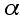
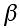

| More Values |
 |
 |
|
Aluminum |
23 x 10-6 1/°C | 23 x 10-6 1/°C |
| Copper | 17 x 10-6 1/°C | 51 x 10-6 1/°C |
| Steel | 12 x 10-6 1/°C | 36 x 10-6 1/°C |
| Ice | 17 x 10-6 1/°C | 51 x 10-6 1/°C |
| Water | - | 207 x 10-6 1/°C |
Let's take a look at a sample calculation:
Suppose I want to calculate what temperature (down from room temperature of 22°C) do I need to cool a tight fitting 5cm copper rod from a steel sleeve. The copper rod will contract at a rate of 17 parts per million to steel's 12 parts per million. I probably only need a 0.01mm difference to get them apart so I can look at it this way: For each degree centigrade the copper contracts 17µm to Steel's 12µm or a difference of 5µm I would need to bring the materials down 40°C to achieve this separation or to -18°C. A freezer should suffice. 0.01mm / 50mm / ( 17x10-6 /°C - 12x10-6 /°C ) = 40°C
Bulk dimensions of materials also change as temperature rises and falls. You can look up the coefficient for the material you want or you can obtain it from the linear coefficient. Simply ask yourself, how does the volume of a material change as its linear dimension changes?
Take a cube of dimension a and ask how does the volume (V=a3) change as a changes by a little bit? Let a = a+ Δa then V+ ΔV = (a+ Δa)3 . Carrying out the calculation we see that V+ ΔV = a3 + 3a2 Δa + smaller terms. Subtracting V from both sides and dividing by V we can see that the ratio of volumetric change to the change in the ratio of a linear dimension can be given as: ΔV/V = 3Δa/a. By comparing formulas for the coefficient of linear and volumetric expansion we see that β = 3α